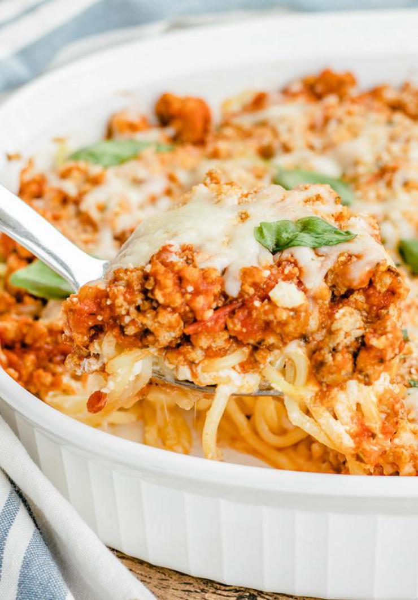

Keto Turkey Pasta

Run don’t walk to make this keto baked cream cheese spaghetti.
This is one of the most delicious low carb recipes I have made.
This low carb baked cream cheese spaghetti is so creamy and yummy.
Skip the high carb pasta noodles and substitute them with these low carb palmini noodles.
You won’t even be able to taste the difference.
I have family and friends that don’t follow a ketogenic diet / lifestyle and they love this baked cream spaghetti casserole.
This is such an easy keto pasta recipe to put together.
From scratch ground turkey m arinara sauce followed by a cream cheese mixture topped over noodles and baked in the oven.
Homemade baked cream cheese pasta you don’t want to pass up.
The perfect keto dinner idea or lunch idea.
Make and serve as side dishes too.
This is the perfect keto meal idea.
Get ready to bake up the best low carb keto cream cheese spaghetti.
- 2 cans palmini spaghetti noodles
- 1 tbsp butter
- 1 lb ground turkey
- 1 1/2 cup pasta sauce
- 4 oz cream cheese softened
- 1/4 cup sour cream
- 1/4 cup ricotta
- 1 cup shredded mozzarella cheese
- 1/4 cup grated parmesan cheese
- 1/4 cup onion chopped
- 2 cloves garlic
- 1 tbsp fresh chopped parsley
- 1/2 tbsp oregano
- 1/2 teaspoon garlic powder
- 1/2 tbsp onion powder
- 1/4 tsp garlic salt
- 1/4 tsp black pepper
- fresh basil leaves
- red pepper flakes
- Over medium heat, melt butter in a medium-size pan.
- Add ground turkey and cook until browned.
- When turkey has browned, add in pasta sauce, onion, garlic, fresh parsley, oregano, garlic powder, onion powder, garlic salt, and pepper, and bring to a light simmer for 5 minutes.
- Set aside.
- Pre-heat oven to 350 degrees.
- While sauce is simmering, combine cream cheese, ricotta cheese, sour cream and 1/2 cup mozzarella in a bowl.
- Drain and rinse noodles.
- Spray a 9×13 baking pan or large casserole dish with oil.
- Spread out the pasta evenly to cover bottom of casserole dish.
- Spread the cream cheese mixture evenly over the noodles followed by the turkey and sauce mixture.
- Top with remaining mozzarella, parmesan cheese
- Bake for 20-25 minutes or until cheese is melted and beginning to brown.
- Garnish with fresh basil and red pepper flakes to taste.
- Serve